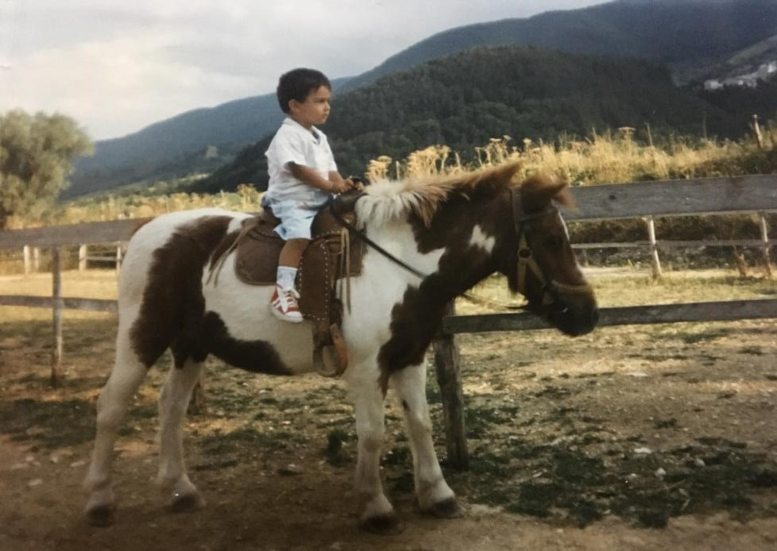

Current Situation & Key Strengths 💪
At the moment I am studying in Italy Computer Engineering. Initially wasn't that straight-forward; the UK university
approach is more practical, and paradoxically I was more used to the english language for studying.
However, I can say the whole process is extremely challenging and rewarding in itself! I find it open-minding as much as my
university experience abroad, and matching my language skills with computer science is what can really boost my career!!
Sometimes I even feel like I have got more than one engine to work with, depending on the language I use. I can study/research
both in English and in Italian, and this gives me a great edge and makes me more dynamic! I have great balance
between the two languages and always work to keep those engines as sharp as possible! For me the key is both passion and
dedication!
Future Projects & Objectives 
I see good opportunities in Italy for a rewarding future in my sector, where I can reach growth and personal satisfaction.
In the computer science world I wouldn't mind entry-level jobs in order to progress; I am quite interested in web development.
front-end roles could be easier to start with but I have concrete full-stack capability as well. Right now I see work as the priority,
and a second degree as an objective that will repay me on the long-term.
I bet you could notice from my CV I am not a person that likes to be stagnating, and I enjoy challenges
to level-up in life. Moreover, I like getting updated and learning
new professional skills! Mastering pc or web related knowledge can also be critical in everyday life, for example it happened
to me to help friends with their Wordpress site, etc. Anyways, is something good that sharpens the brain!
Web Development Mission 🚀
As I mentioned in my CV, I like all types of programming languages, from OS/processor ones to web development! The first
language I learned is C language, it was fun, and gave me good basis to learn also OOP languages like JAVA. Of the latter I
appreciate the most its reliability/robustness and platform independence!
A language that surprised me due to its simplicity and fun is JavaScript, which is also much versatile. In addition to This
I find interesting the different use that can be made out of it thanks to various frameworks, environments and libraries (e.g. vue.js, node.js etc.).
And of course I am quite familiar with HTML and CSS, which compose these pages! These are quite easy and straight-forward
languages, but I know that things can get tricky when there are more variables to take into account!
I see the two latter languages, once considered on their own, as a matter of architecture and design, and I love this! it
leaves space for creativity and for satisfying customers' needs artistically! In this way I see web development as the
most natural solution to enter the computer science world and display some SKILLS (go to CV)!

Tracking future challenges...
P.S. I love web development, because I almost take it personal when a site is made in a proper way or not. Many times when
I lived abroad it was not a piece of cake or simply travelling for fun. And good websites - I know - can be great friends too.. apart
from being key business tools, for sure!